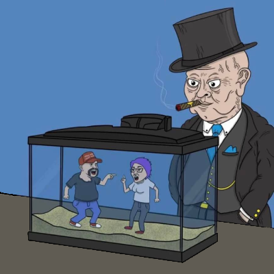

About Me
Hi, my name is Shaar and I enjoy creating and contributing things onto the web. My interest in learning to program came from getting into the cryptocurrency space back in 2017 during high-school. Most of what I did financially in the crypto space was reliant on technical analysis and monitoring/analyzing other forms of chart data. After doing more research into the financial industry, I came to the conclusion that I would like to pursue a career which involves Quantitative Analysis and Trading. This led me to want to learn how to program.
Listed below are some of the languages I am currently working with:
E-commerce Website
I am proud to share my E-commerce website in this portfolio because of the amount of time and effort I put into learning and piecing together the concepts that I used to complete the site. While mapping out and building this website, the creative process involved really showcased the different tools and skills we have been taught and have learned throughout the apprenticeship. By putting our skills to the absolute test in giving us the E-commerce project, any potential lack of skill showed itself and pointed to areas where we may have an opportunity to grow. I pushed myself to the absolute limit when completing this assignment and I included not only what was required, but what was also optional such as a slideshow. I used HTML, CSS and for the first time I also utilized a little JavaScript in my website. This was really a big step for me, and it really showcases the effort I put in to create the website. Like most designers, I am very picky with the work that I put out and attach to my name. I really had to make some decisions on whether to include certain features in the website due to time constraints. My main goal and takeaway from this assignment moving forward in the second half of the program would be to learn to decide what is and what is not important to stick to time contraints as best as possible. In the end, I am very pleased with my result and I look forward to utilizing the same mindset moving forward in the program to further sharpen my skills.
I am proud to share my E-commerce website in this portfolio because of the amount of time and effort I put into learning and piecing together the concepts that I used to complete the site. While mapping out and building this website, the creative process involved really showcased the different tools and skills we have been taught and have learned throughout the apprenticeship.
Tech Projects
Gateway Site
- ▹ First ever website.
- ▹ Utilized strictly HTML and CSS.
- ▹ Website layout and theme complimented the nature of the content.
- ▹ Fairly responsive website, no areas of blank space or errors.
E-Commerce Site
- ▹ JavaScript, HTML, and CSS
- ▹ Very extensive Men's Fashion website.
- ▹ Implented JS to change images on hover and play videos on hover.
- ▹ First time adding JavaScript to a site as well as media queries.
A Work in Progress...
Road Talk No. 2
This political cartoon was shared to the class while I gave my second Road Talk about the state of leadership around the world in the modern day. The topic was very controversial; however, I tend to gravitate towards such topics because it helps me put in extra effort to articulate opinions and facts in a way that is easily digestible for everyone. I have chosen to reflect on my second Road Talk because I believe that I made an important change which really outlines the difference between a good speech and a wonderful speech. As a part of my feedback given to me for my first Road Talk, I was commended on the nature of my topic and how the audience reacted to the way I presented my information. An area in which I was told that I had some room to grow in was my persistent use of filler words. Even though the audience was fully captivated and intrigued during my 8-minute speech, my use of filler words could instill poor public speaking habits moving into the future and it would be best to exclude them as much as possible. This led me to prepare for my second Road Talk accordingly and it also showed me that I can always learn to become a better communicator. Throughout my second Road Talk, I exercised pauses very well and I did not use a single filler word throughout my entire 10-minute speech. This helped me communicate my information and thoughts to the audience in a more structured yet still genuine tone. Moving forward in the second half of the program, my goal is to add as many weapons in my arsenal as possible to become the best public speaker I can be. This learning process has further made me realize that the ability to communicate and articulate opinions in a pleasant, appealing, and orderly fashion is a vital skill in the workplace and it well help in just about every aspect of life.
This political cartoon was shared to the class while I gave my second Road Talk about the state of leadership around the world in the modern day. The topic was very controversial; however, I tend to gravitate towards such topics because it helps me put in extra effort to articulate opinions and facts in a way that is easily digestible for everyone.
